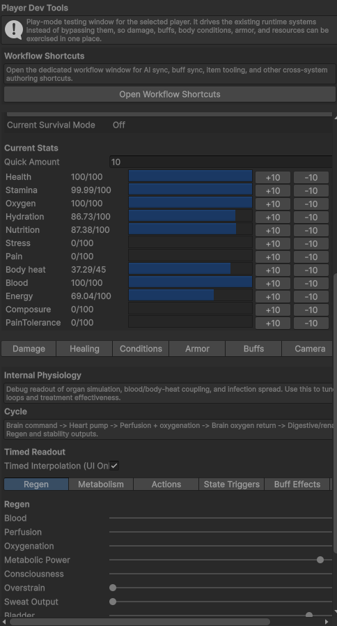
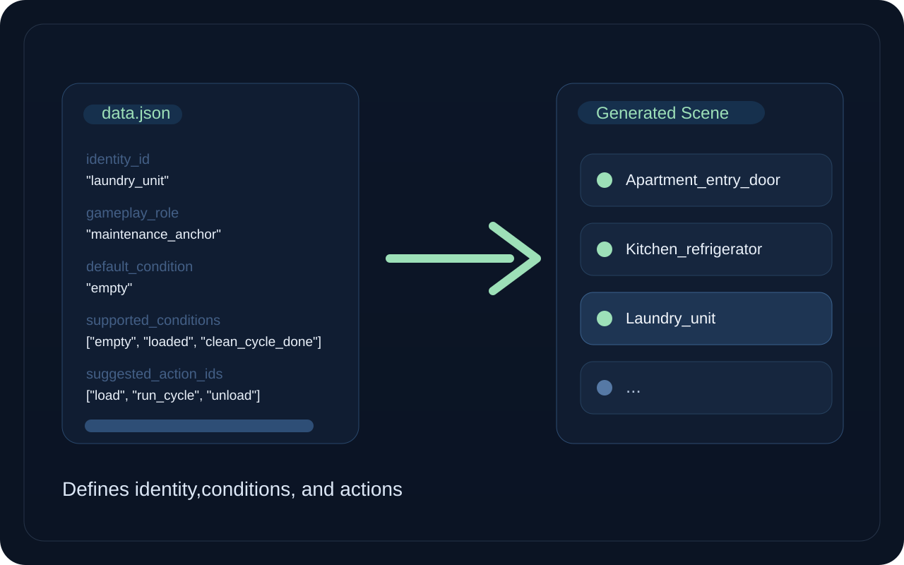
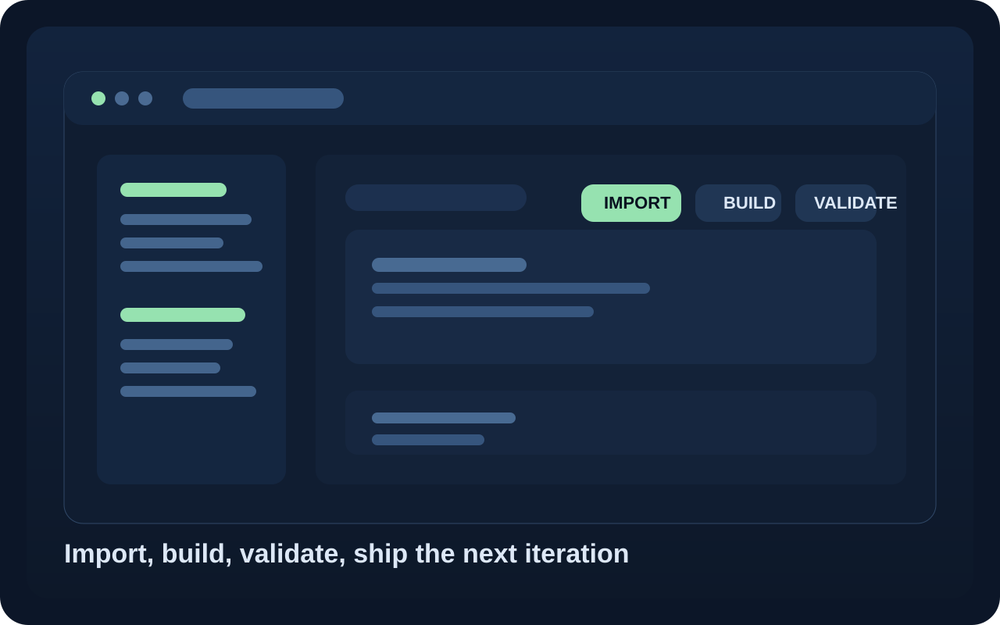
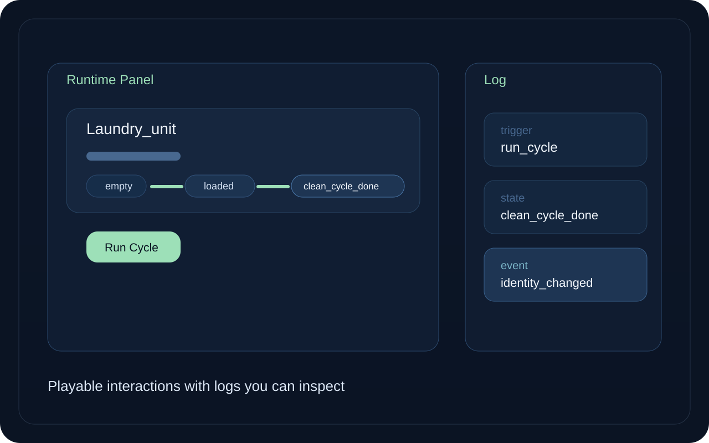

Runtime Stats
Health, stamina, oxygen, hydration, stress, pain
AI-Assisted System Building
A working Unity pipeline that turns prompt-driven ideas into structured data, generated scenes, inspectable systems, and playable runtime output.
Demo
Structured AI output becomes generated Unity content with state, behavior, and runtime proof.
Most AI demos generate text. This generates systems.
Related system proofs
Runtime Control
The same systems shown in the demo are backed by runtime tooling for control, debugging, and validation. This is not static generation - it is a controllable simulation.
What this controls
Health, stamina, oxygen, hydration, stress, pain
Damage, healing, buffs, armor, camera, internal state
Blood, perfusion, oxygenation, metabolism, sweat output
AI, items, economy, armor, buffs, shop catalogs

How It Works
Capabilities

Structured JSON defines identities, conditions, and actions that generate real scene content.

Custom tools import, validate, and build structured data into usable Unity systems.

Interactions change object state, with logs and validation proving system behavior.
Core Value
Structured AI output is imported, validated, and built into real Unity systems. The result is faster iteration with visible proof: real scenes, real objects, and real state changes.
Additional Systems
Across multiple Unity projects, I built runtime architectures where structured input becomes authoritative simulation, system behavior, and observable output.
Runtime Architecture
A gameplay architecture where Unity is not the source of truth and all runtime state is owned by a central simulation. Scene objects submit commands into an authoritative plain C# simulation that owns all runtime state.
World Simulation
A shared-world simulation architecture where agents, schedules, identity, law, security, economy, body state, buffs, combat AI, and observability operate as coordinated subsystems.
Generation Pipeline
A full pipeline where structured inputs generate scenes, systems, data, and runtime behavior through editor tooling, runtime bridges, and validation layers.
Runtime Proof
Session logs capture scene identity projection, runtime state, warnings, and trace events.
NarrativePrototype/BridgeIdentityProjected
RuntimeSessionLog
Systems emit machine-readable events for validation, debugging, and post-run review.
IdentitySnapshotCaptured
CommandResult / SimulationTick
Unity import, domain reload, scene sync, and runtime traces are captured as artifacts.
AssetImportWorker / DomainReload
Import Request
Closing